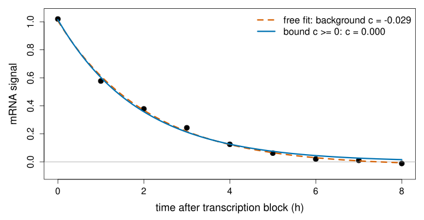
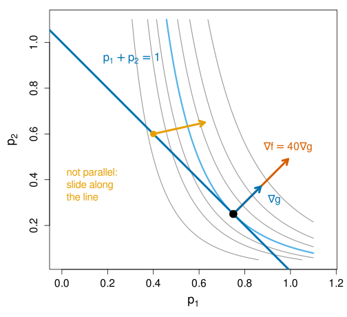
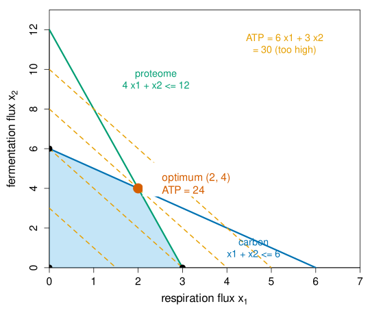
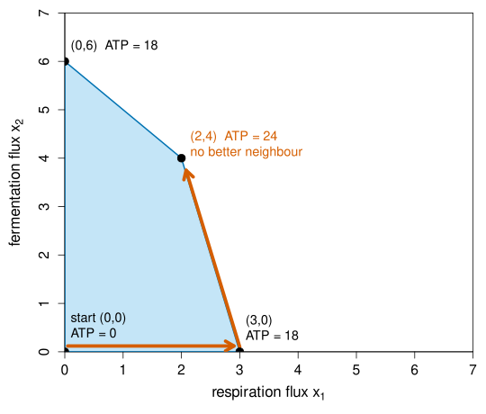
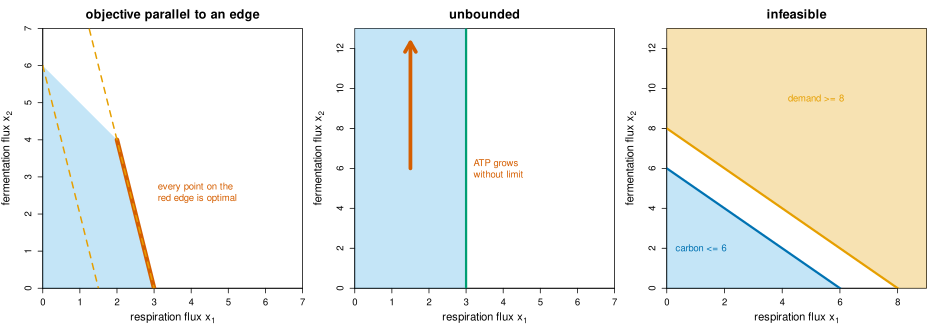
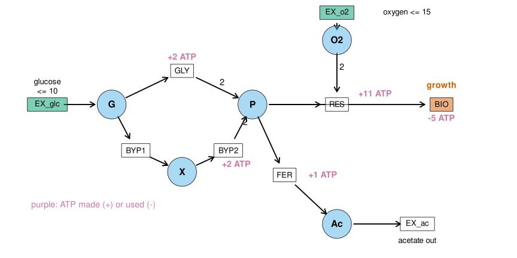
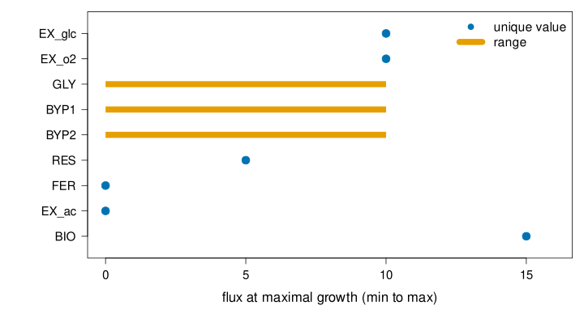
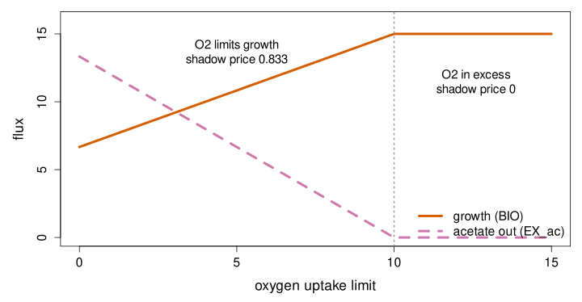

Part 9 — Optimisation and model fitting
So far every optimiser was free to try any parameter value. Biology says no: rates are positive, proportions sum to 1, a cell takes up at most so much glucose.
| constraint | example | written as |
|---|---|---|
| sign / bound | a degradation rate, a background signal | k \ge 0, c \ge 0 |
| sum to one | diet fractions, cell-type proportions | p_i \ge 0,\ \sum_i p_i = 1 |
| capacity | uptake of glucose, enzyme or ribosome budget | v_\text{glc} \le 10 |
| balance | metabolites at steady state | S\mathbf v = \mathbf 0 |
We have already met answers that break them:
A constraint is active at a solution if it holds with equality there (c = 0, v_\text{glc} = 10). Inactive constraints do not change the answer.
mRNA decay after a transcription block: signal y = A e^{-kt} + c, background c \ge 0 (synthetic data).
t <- 0:8 # hours
y <- c(1.020, 0.577, 0.378, 0.243, 0.125, 0.062, 0.020, 0.010, -0.012)
sse <- function(p) sum((y - (p[1] * exp(-p[2] * t) + p[3]))^2) # p = (A, k, c)
fit <- optim(c(1, 0.3, 0.1), sse, method = "BFGS")
round(fit$par, 4)
# [1] 1.0366 0.4788 -0.0294
fitb <- optim(c(1, 0.3, 0.1), sse, method = "L-BFGS-B", lower = c(0, 0, 0))
round(fitb$par, 4)
# [1] 1.0152 0.5214 0.0000optim(method = "L-BFGS-B") takes lower and upper: steps that would leave the box are cut back (projected) onto it.Optimise an unconstrained \theta and map it into the allowed set:
sse_log <- function(q) sse(c(q[1], q[2], exp(q[3]))) # c = exp(theta)
fitl <- optim(c(1, 0.3, log(0.1)), sse_log, method = "BFGS")
round(fitl$par, 3); signif(exp(fitl$par[3]), 3); fitl$convergence
# [1] 1.015 0.523 -7.116
# [1] 0.000812
# [1] 1 # 1 = hit the iteration limit
Counts n = (30, 10) of two cell types. Maximise the log-likelihood f(p) = 30 \log p_1 + 10 \log p_2 subject to g(p) = p_1 + p_2 = 1.
\nabla f = (30/p_1,\ 10/p_2) and \nabla g = (1, 1), so 30/p_1 = 10/p_2 = \lambda. With p_1 + p_2 = 1: \lambda = 40, p = (0.75, 0.25).
n <- c(30, 10)
f <- function(p) sum(n * log(p))
p_hat <- n / sum(n)
n / p_hat # gradient of f at the optimum
# [1] 40 40 # = lambda * (1, 1)
f(1.01 * p_hat) - f(p_hat) # relax the constraint: sum = 1.01
# [1] 0.3980132 # about lambda * 0.01 = 0.4Objective and constraints all linear. A cell makes ATP by respiration (x_1) or fermentation (x_2) (toy numbers):
\max\ 6x_1 + 3x_2 \quad\text{subject to}\quad \begin{aligned} x_1 + x_2 &\le 6 &&\text{carbon supply}\\ 4x_1 + x_2 &\le 12 &&\text{proteome: respiration enzymes are costly}\\ x_1,\ x_2 &\ge 0 \end{aligned}


lpSolve::lplibrary(lpSolve)
res <- lp("max", objective.in = c(6, 3),
const.mat = rbind(c(1, 1), c(4, 1)),
const.dir = c("<=", "<="), const.rhs = c(6, 12),
compute.sens = TRUE)
res$status; res$solution; res$objval
# [1] 0 # 0 = success
# [1] 2 4
# [1] 24
res$duals[1:2] # shadow prices of carbon and proteome
# [1] 2 1lp assumes x \ge 0. Python: scipy.optimize.linprog (HiGHS, minimises); Rust: the minilp crate.
lpSolve is not reliable here: on the middle LP it returns status 0 (“success”) with x_2 = 10^{30}, its internal infinity. Look for absurd values.
Toy network: 6 metabolites, 9 reactions. Glucose (G) is split into pyruvate (P) by two routes (GLY, or BYP1 + BYP2 via X). P is respired (RES, needs O2), fermented to acetate (FER), or built into biomass (BIO).
Row = metabolite, column = reaction, entry = how many molecules the reaction makes (+) or uses (−).
rxn <- c("EX_glc", "EX_o2", "GLY", "BYP1", "BYP2", "RES", "FER", "EX_ac", "BIO")
S <- rbind(G = c(1, 0, -1, -1, 0, 0, 0, 0, 0),
O2 = c(0, 1, 0, 0, 0, -2, 0, 0, 0),
X = c(0, 0, 0, 1, -1, 0, 0, 0, 0),
P = c(0, 0, 2, 0, 2, -1, -1, 0, -1),
ATP = c(0, 0, 2, 0, 2, 11, 1, 0, -5),
Ac = c(0, 0, 0, 0, 0, 0, 1, -1, 0))
colnames(S) <- rxn
qr(S)$rank
# [1] 6\max_{\mathbf v}\ v_\text{BIO} \quad\text{subject to}\quad S\mathbf v = \mathbf 0,\quad \mathbf v \ge \mathbf 0,\quad v_\text{glc} \le 10,\quad v_{\text{O}_2} \le 15
fba <- function(ub = c(10, 15), ko = integer(0)) {
B <- diag(9)[c(1, 2, ko), , drop = FALSE] # rows picking v_glc, v_o2, knock-outs
lp("max", objective.in = c(rep(0, 8), 1), # maximise v_BIO
const.mat = rbind(S, B), const.dir = c(rep("=", 6), rep("<=", nrow(B))),
const.rhs = c(rep(0, 6), ub, rep(0, length(ko))), compute.sens = TRUE)
}
sol <- fba(); sol$objval
# [1] 15
setNames(sol$solution, rxn)
# EX_glc EX_o2 GLY BYP1 BYP2 RES FER EX_ac BIO
# 10 10 10 0 0 5 0 0 15
Flux variability analysis (FVA): fix growth at its maximum (15), then minimise and maximise each flux in turn, 2 \times 9 more LPs.
ko <- sapply(1:9, function(j) fba(ko = j)$objval) # remove one reaction at a time
round(setNames(ko, rxn), 3)
# EX_glc EX_o2 GLY BYP1 BYP2 RES FER EX_ac BIO
# 0.000 6.667 15.000 15.000 15.000 6.667 15.000 15.000 0.000
fba(ko = c(3, 4))$objval # GLY and BYP1 together
# [1] 0fba()$duals[7:8] # rows 7, 8: glucose and oxygen bounds
# [1] 1.5 0.0
round(fba(ub = c(10, 4))$duals[7:8], 3) # less oxygen
# [1] 0.667 0.833
lpSolve::lp, scipy.optimize.linprog (HiGHS), minilp. Check the status: tie, unbounded, infeasible.Next: Part 10, The diffusion (heat) equation by finite differences.